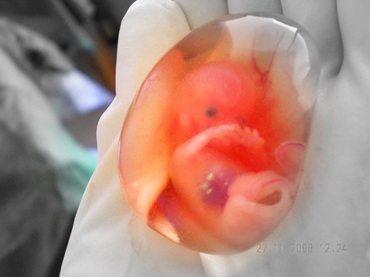

El aborto espontáneo es la pérdida del feto o embrión de forma inesperada antes de las 20 semanas del embarazo, más allá del aborto en si la razón de las misma puede ser un descarte natural del embrión pues este puede tener problemas en los cromosomas o a nivel hormonal. También se puede dar por problemas en el cuello uterino el cual tiene dificultad de sostener el embarazo.
Para una persona que se siente afortunada por estar en el estado de embarazo perderlo a causa de un aborto espontáneo puede ser una catástrofe que trae gran tristeza por la manera en que finaliza todo y en que culminan los hechos.
Antes que todo no debe sentirse mal, aunque se comprende que el perder a algo tan esperado con un bebé es doloroso debe saber que el aborto espontaneo en el embarazo es una sombra que siempre se mantiene allí. Pues en los primeros días luego que el ovulo ha sido fecundado la probabilidad de perderlo son altas, tanto así que se estima que en los primeros días del embarazo se aborta espontáneamente el 50% de los óvulos fecundados, y esto sin la mujer saber que ha quedado embarazada y mucho menos que allá abortado. A medida que pasa el tiempo entre las primeras 7 semanas este número decrece un poco manteniéndose entre el 10% al 25% de casos de aborto espontáneos. Este porcentaje disminuye aún más ya cuando se detectan los primeros latidos del feto.
Lo que se trata de explicar que más allá de la tristeza de lamentar la perdida se debe saber que los abortos espontáneos son más comunes de lo que parece a simple vista, algunas parejas optan por mantener el embarazo en secreto el primer trimestre, para evitar así posibles momentos incomodos y de desilusión mayores.
Alrededor de la mitad del total de los óvulos fecundados muere y se pierde (son abortados) en forma espontánea, casi siempre antes de que la mujer se percate de que está embarazada. Entre las mujeres que saben que están embarazadas, aproximadamente del 10% al 25% sufrirán un aborto espontáneo. La mayoría de los abortos espontáneos ocurre durante las primeras 7 semanas del embarazo. La tasa de este tipo de aborto disminuye después de que se detecta el latido cardíaco del bebé.
El aborto espontaneo es un evento natural por lo cual suele llevar por nombre “aborto natural” tiene distintas distinciones dependiendo de la forma es que se dé el proceso como se muestra abajo:
Aborto consumado: Se trata cuando todo lo relacionado con el embarazo es expulsado es su totalidad.
Aborto incompleto: Cuando solo es expulsado parte de los tejidos, pero aún quedan en el útero los tejidos restantes.
Aborto inevitable: Son notados todos los síntomas que llevan a un aborto, pero la finalización de este evento se da completamente sin poder hacer nada.
Aborto Infectado: Cuando existe la presencia de una infección ya sea en el embrión o feto o el saco amniótico
Aborto retenido: Cuando finaliza la vida del embrión abortando así el embarazo, pero todos los tejidos se mantienen en el cuerpo de la madre.
En un aborto espontáneo los síntomas que puede pueden ser dolor abdominal, cólicos, tejido tisular reconocible pues se identificaría como coágulos de sangre, también puede darse el caso que sea solo sangrado vaginal sin los cólicos.
Llegar a la conclusión de cuál fue la causa exacta que ocasiono el aborto es algo difícil de determinar. Pero algo que se ha logrado identificar es que la actividad física no está involucrada en la mayoría de los casos, actividades como el sexo, el hacer ejercicios, trabajar y tomar. Algo a tener en cuenta es que son pocos los medicamentos que causan un aborto espontaneo, es interesante saber que las caídas son pocas las ocasiones donde terminan en un aborto espontaneo.
Esto más bien esta comúnmente relacionado con problemas como:
Otras causas pueden ser:
También hay que tener en cuenta que a mayor edad mayor es el riesgo de padecer un aborto espontáneo, pues la amenaza de tener uno se hace más grande a partir de los 30 años y esta amenaza vuelve a crecer con los 35 y ni decir después de los 40.
Cuidado del embarazo ante la amenaza de abortar.
Si su médico llega a notar que usted puede tener un aborto espontaneo, lo que generalmente le recomendara es que mantenga reposo en cama y evite cualquier actividad física (aunque como dijimos anteriormente no está comprobado que el esfuerzo físico tenga algo que ver con el aborto espontaneo), esto hasta que el embarazo se haga mayor y estas amenazas se hagan menos posibles. Mientras este la amenaza de aborto los más probables es que su médico le recomiende evitar las salidas y menos aún a lugares donde la atención médica no está disponible.
Si se le ha presentado un aborto espontáneo, Usted debe dirigirse al médico e informar sobre lo ocurrido pues todas las pruebas para tratar de determinar la causa deben ser hechas en un consultorio.
Pues a través de las ecografías, se le analizara en búsqueda de posibles restos del embarazo, esto es muy importante de descartar para su salud ya que podría traer problemas mayores si se infecta.
También usted necesite estos tejidos expulsados para hacer pruebas de laboratorio en búsqueda de problemas genéticos para determinar las causas del aborto espontaneo y para posibles tratamientos futuros.
Luego del aborto espontaneo su menstruación se reanudará entre las 4 y 6 semanas luego de lo ocurrido.
Su ciclo menstrual puede tardar hasta 6 semanas antes de volver, esto no es lo mismo para su ovulación ya que esta puede volver inmediatamente luego de haber tenido un aborto espontaneo, esto quiere decir que usted puede quedar embarazada luego de haber tenido un aborto.
Después de un aborto espontaneo si se siente bien físicamente como para mantener relaciones sexuales se le recomienda que utilice condones para evitar posible embarazo esto al menos hasta que tenga su primer ciclo menstrual y se estabilice.
Asesoramiento para un aborto seguro al whatsapp Hacer un consulta